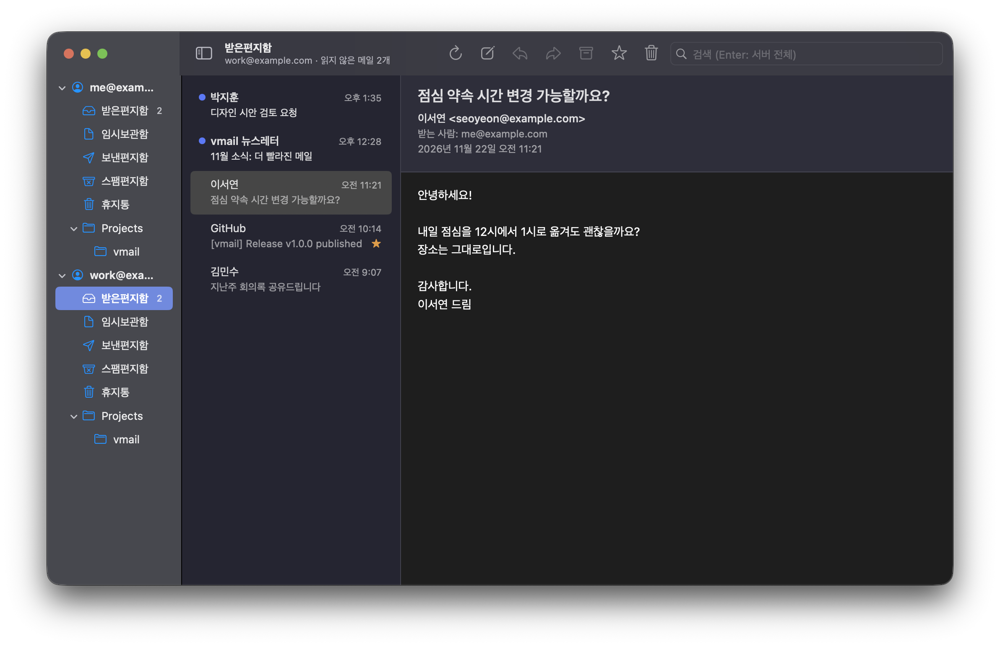

macOS를 위한 네이티브 메일 앱. 빠르고, 필요한 것만 있고, 아무것도 수집하지 않습니다.

AppKit과 시스템 프레임워크만 사용합니다. 외부 의존성 0개.
Gmail, iCloud, 네이버를 한 창에서. 앱 암호는 복사만 하면 로그인됩니다.
목록을 디스크에 캐시해 실행하자마자 메일이 보입니다.
스크립트는 끄고 원격 이미지는 기본 차단합니다.
규칙으로 새 메일을 옮기고, 읽음 처리하고, 정리합니다.
기간을 정해 두면 자리를 비운 동안 대신 답장합니다.
입력하면 바로 거르고, Enter로 사서함 전체를 찾습니다.
EUC-KR·CP949 레거시 인코딩도 깨지지 않습니다.
vmail에는 서버가 없습니다. 계정도, 가입도, 수집하는 데이터도 없습니다.
Mac이 Gmail·iCloud·네이버 서버에 직접 접속합니다. 메일이 다른 곳을 거치지 않습니다.
비밀번호는 이 Mac의 키체인에만 저장되고, 설정 내보내기에도 담기지 않습니다.
사용 통계도, 광고도, 텔레메트리도 없습니다. 앱이 스스로 접속하는 곳은 메일 서버뿐입니다.
원격 이미지를 기본으로 막아, 보낸 사람이 메일을 열었는지 알 수 없습니다.
모든 코드는 GitHub에 공개되어 있어 직접 확인할 수 있습니다.
brew install --cask seongilp/tap/vmail또는 최신 DMG 내려받기 · macOS 13 이상 · Apple 공증 완료